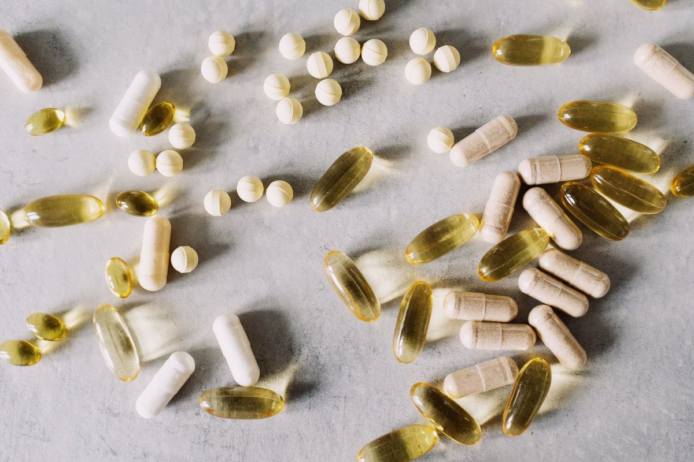
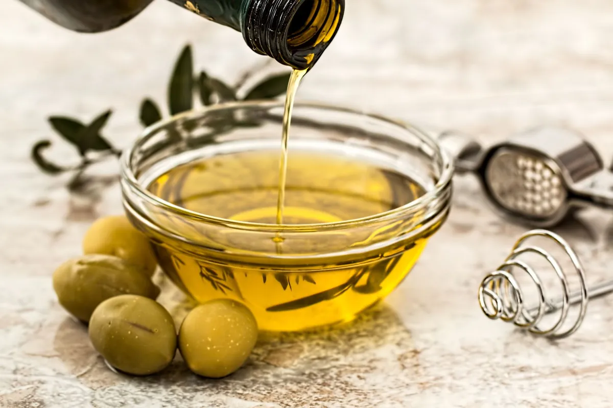

A Simple Daily Fiber Supplement Reduced Arthritis Pain And Improved Strength

Key takeaways
- Two years ago, my morning routine involved staring at my bedroom stairs with absolute dread while rubbing my swollen knees.
- I felt broken at thirty-four, trapped in a body that couldn't handle a quick walk around the block or open a tight jar without shooting
- Track what feels sustainable and adjust gradually.
Two years ago, my morning routine involved staring at my bedroom stairs with absolute dread while rubbing my swollen knees. I felt broken at thirty-four, trapped in a body that couldn't handle a quick walk around the block or open a tight jar without shooting joint pain.
I thought joint stiffness was just my new normal until I stumbled upon research showing how A Simple Daily Fiber Supplement Reduced Arthritis Pain And Improved Strength by transforming the gut microbiome. Skeptical but desperate, I stirred a spoonful of soluble fiber into my morning coffee, completely unaware that this tiny habit would give me my mobility back.
When we nourish our intestinal flora with prebiotic fiber like acacia or resistant starch, our microbes produce short-chain fatty acids (SCFAs) like butyrate. These compounds travel through the bloodstream, actively turning down inflammatory cascades in our joints and supporting muscle fiber protein synthesis.
I started noticing small victories after just three weeks of consistent daily prebiotic fiber intake. My grip strength returned, allowing me to lift heavy groceries without flinching, and my morning stiffness dropped significantly.
It turns out that A Simple Daily Fiber Supplement Reduced Arthritis Pain And Improved Strength by lowering key inflammatory markers like C-reactive protein (CRP). If you want to dive deeper into gut restoration, check out this related healthy tip for daily digestion.
For the best results, start slow with a half dose of prebiotic fiber to avoid temporary bloat, and pair it with a full glass of water.
I recommend mixing prebiotic fiber into non-carbonated liquids like oat milk, daily smoothies, or warm herbal teas. You can also read another practical guide on fighting chronic inflammation naturally.
Building consistency with gut health doesn't mean changing your entire diet overnight. Focus on getting a high-quality fiber powder that blends seamlessly into your existing habits without altering the taste of your food.
To keep your momentum going, explore this similar wellness insight about lower-body mobility routines. Over time, reducing gut-driven systemic stress allows your cartilage and surrounding muscles to heal and strengthen.
The 2-Minute Win
Stir one serving of unflavored prebiotic fiber supplement into your morning glass of water or tea right now. Taking it at the exact same time every day builds the microbial consistency needed to suppress joint-damaging inflammation.
Remember that steady, boring habits beat dramatic, short-lived detoxes every single time. Try to stay consistent with this tiny tweak to experience sustained physical relief.
Educational only — not medical advice. Feel free to explore more anti-inflammatory guides to support your journey toward functional strength and pain-free living.
Recommended Reading
- Mindfulness Meditation for Daily Stress Relief: Simple Techniques for a Calmer You
- 3 Practical Ways to Handle Stress When Desperate For Heart Surgery For Their Baby, A Family Feels The Effects Of Pediatric Hospital Shortages
- Daily Mindfulness for Stress Relief: Simple Techniques for a Calmer You
More in anti-inflammatory

anti-inflammatoryCan Extra Virgin Olive Oil Fight Cancer and Viruses? Experts Say Yes
Discover how Extra Virgin Olive Oil, the immune-boosting supplement that fights cancer & viruses, can significantly enha
Read article →Watermelon's Secret Health Boost: What Scientists Just Found Out!
Discover Watermelon's Secret Health Boost: What Scientists Just Found Out! Beyond hydration, this summer fruit packs sur
Read article →